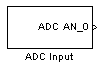
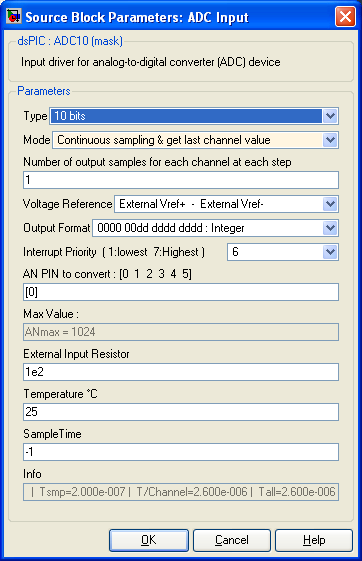

|
| |
home » Embedded Target for dsPIC » Blocks description » ADC Input |
|
|
ADC Input |
||||
|
Input driver for Analog-to-Digital Converter peripheral
 DescriptionThe ADC Input block convert an analog signal from the PIC input channel selected. For each channel you can, at each time step, either read one sample (get a scalar result) or several samples equaly time spreaded separated (with a period time inferior to the block time step). Thus, you get a vector result within one step time. Result format is specified as signed/unsigned and fractional/integer. The input pin "voltage reference" can be selected as voltage reference. 10 or 12 bits choice for conversion is available for dsPIC 33f family. On dsPIC 30f, PIC 24F and PIC 24H family, the bit resolution is fixed and device dependant. Dialog Box Type
10 or 12 bits resolution depending on the microcontroller used (set in the Master block). The two choices are available for the dsPIC 33f family. Mode
Continuous Sampling and get last channel value : In this mode, all selected channel are continuously scanned and converted at high speed. When the simulink block outputs are read, the last value converted from each channel is used. This method provide the minimum time lag between the end of conversions and the calculations using theses values. Number of output samples for each channel at each step
Only available if Mode is set to "Continuous Sampling get output vector". Set the number of sample desired for each output. All outputs have the same number of sample. Voltage Reference
Select the Conversion voltage reference. It can be the microcontroller alimentation, or external voltage reference when using external PIN reference. Output Format
Select the output. Choice are integer or fractional (right or left justification) and signed/unsigned. Interrupt Priority
Used when mode is set to "Continuous Sampling get output vector". AN Channel to convert
Choose AN input pins (enter the vector with channel number to convert). This will also set the number of output of the block. Starting at 0 for AN0. For example, [0 1] will convert channels AN0 and AN1 and block will have two outputs. Max Value
Simulink set this variable equal to the max value for the AN converter. For 10 bits, it is 1024 and for 12 bits it is 4096. This variable is evaluated in the matlab workspace. It allows to normalise the output of the ADC and to keep calculation correct while changing from 10 bits to 12 bits mode. External Input Resistor
Define the value (in ohm) of the input resistor. The bigger, the slower is the charge of the capacity and the slower is the conversion time. Temperature °C
Define the ambiant temperature. The higher, the slower the conversion time is. (see Microchip Refference manual) Sample Time
-1 mean inherited (Define the time step of this block, -1 or a multiple of the diagram time step) Info
Gives several informations :
|